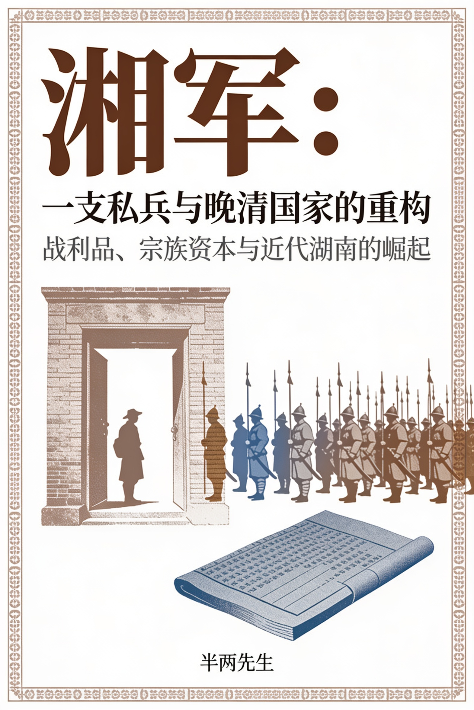

内容简介
晚清湖南何以从边缘省份一跃成为变革策源地？答案不在庙堂奏对，而在湘乡、湘潭的田亩与账簿之间。湘军不仅是一支军队，更是一套精密的社会重组机器。巨额饷银与战利品回流本土，经由宗族、钱庄与书院的转化，重塑了土地产权与阶层流动路径。落第书生与农民在战火中结成利益共同体，将军事暴力转化为教育投资与实业资本。从团练局到新式学堂，从厘金截留到联省自治，这场以战争红利为燃料的地方实验，为近代湖南的启蒙与伟人辈出奠定了结构性基础。一部跳出英雄叙事、用家谱与碑刻还原财富传导机制的社会史。
编辑点评
本书最见功力处，在于将湘军战利品回流这一经济现象，锻造成贯穿三十章的因果链条。第二章以募兵名册解剖宗族房支的田产分布与入营风险，第十五章借善后局淤洲查丈清册揭示程序规则如何偏向既有资本，这些章节的论证骨架扎实，史料与洞见咬合紧密。遗憾的是，书中存在数处模糊来源（如“某档案”“零散家书”），削弱了实证的可核验性；部分章节（如第十二、十三章）文风稍显生硬，且章节衔接偶有断裂感。整体而言，这是一部结构完整、问题意识鲜明的社会史，若能在史料溯源与局部文风上稍作打磨，将更臻完善。
目录
共 30 章第 01 章团练的合法化第 02 章以湘乡县为主要解剖对象第 03 章饷源之变：从捐输摊派到厘金抽收的财政转型第 04 章私人网络与指挥链重构第 05 章战利品的制度性分配第 06 章湘潭之战与逆产再分配第 07 章土地产权的暴力重组第 08 章宗族权力的金钱改造第 09 章书院捐建与知识路径的偏移第 10 章姻亲网络的战略编织第 11 章典当与钱庄的军资起源第 12 章绅商阶层的双重基因第 13 章捐纳的杠杆化第 14 章幕府的知识生产第 15 章善后局的权力沉淀第 16 章团练局的在地化第 17 章刻书业的理学复兴第 18 章军功世家的代际转型第 19 章厘金的地方化截留第 20 章新式学堂的军功资本第 21 章矿业投资的财富转化第 22 章留日学生的网络构建第 23 章咨议局选举的军功底色第 24 章新军募兵的地缘延续第 25 章革命动员的旧瓶新酒第 26 章民初财政的厘金遗产第 27 章教育会的权力网络第 28 章联省自治的军绅底色第 29 章矿业资本与省营实业第 30 章遗产的沉淀与回响